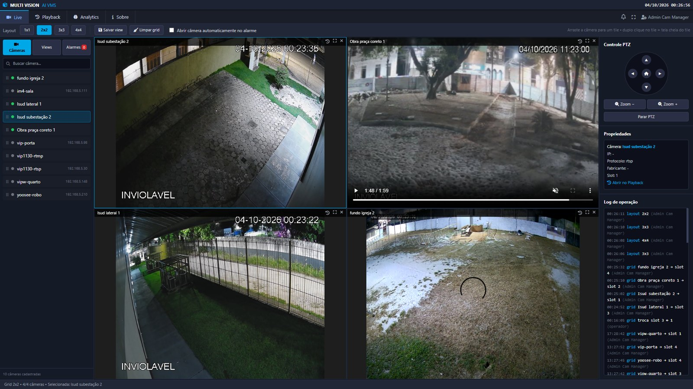
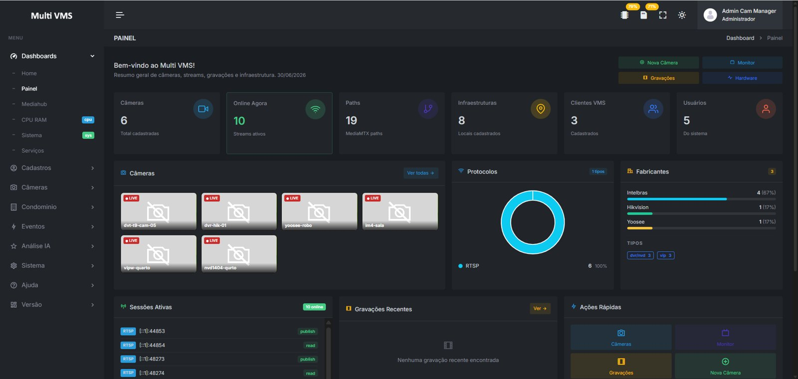
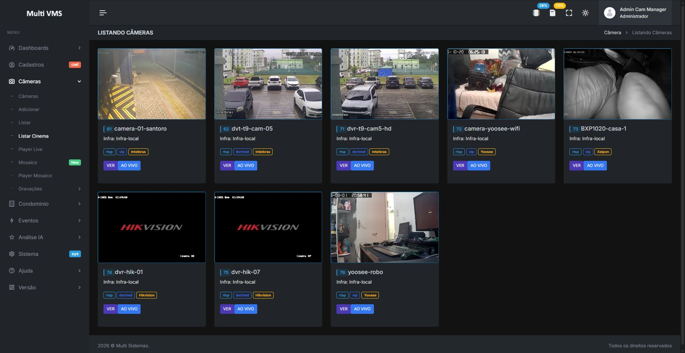
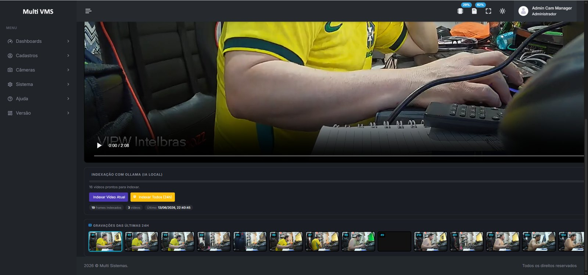
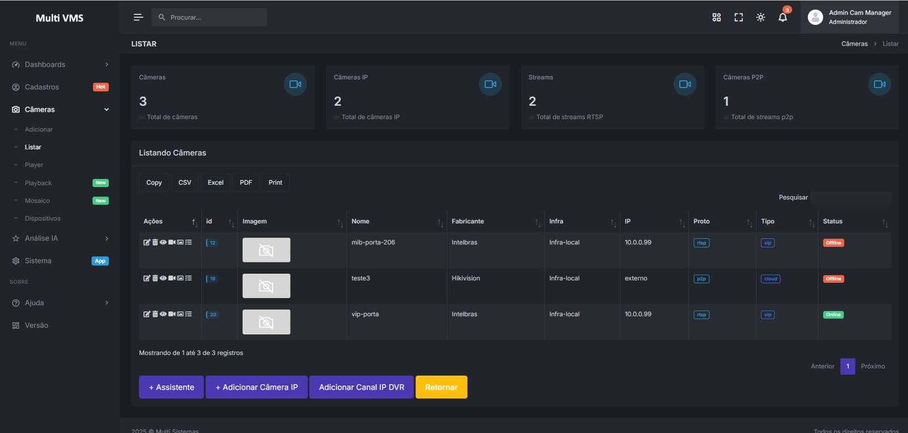

Monitoramento ao vivo
Acesse suas câmeras e alterne entre visualizações com poucos passos.
Vídeo, inteligência artificial e eventos em uma única plataforma — da primeira câmera a grandes operações.

Gerencie câmeras, acompanhe streams e acesse gravações em um só lugar. O Multi VMS conecta sua infraestrutura ao que sua equipe precisa ver e fazer.

PAINEL DE OPERAÇÕESAcompanhe câmeras, streams ativos, infraestrutura, usuários e clientes em um painel de operação.
Acesse suas câmeras e alterne entre visualizações com poucos passos.
Organize câmeras por cliente, setor ou tela de monitoramento.
Navegue por câmera e horário para encontrar o trecho desejado.
Analise imagens com recursos de IA integrados à plataforma e transforme detecções em informações úteis para a operação.

O modelo integrado analisa objetos e eventos em vídeo. A plataforma informa 80 classes COCO disponíveis sem licença adicional.
A IA identifica objetos na imagem e pode segmentar áreas de interesse para apoiar a análise do vídeo.
Além do modelo COCO, o comparativo do produto lista modelos personalizados para máscara, fogo, fumaça, armas, EPI e LPR. Disponibilidade e licenciamento variam conforme a edição e o modelo.
Informações complementares: Vision AI Multi VMS ↗ · comparativo de versões ↗
Da gravação ao tratamento de um alerta, cada etapa ajuda sua equipe a responder com contexto.

Navegue pelas gravações por câmera e horário, usando miniaturas para localizar o momento desejado.
Consulte câmera, evidência e severidade. Registre o tratamento e mantenha o histórico da operação.

↗Trabalhe com diferentes origens de vídeo, dispositivos e sistemas usando os recursos de integração do Multi VMS.
Fale com um especialista ↗API, Webhook e MQTT para conectar eventos, câmeras e serviços.
Disponibilize vídeo em diferentes protocolos para seus fluxos de trabalho.
Opções de aceleração por hardware conforme o ambiente.
Ferramentas para operar, investigar e dimensionar a infraestrutura conforme a necessidade de cada instalação.
Frames das gravações podem ser indexados por IA local (Ollama), para localizar trechos por miniaturas sem enviar o vídeo à nuvem. Navegue pelas gravações das últimas 24 horas e reproduza o trecho relevante.
Gravação da stream original sem recodificação, em arquivos fMP4 organizados por câmera e intervalos de cinco minutos. Defina a retenção por câmera e deixe a limpeza de arquivos antigos automatizada.
Use uma stream leve nos mosaicos e alterne para alta resolução ao abrir uma câmera. A aceleração pode usar Intel Quick Sync, OpenVINO, NVIDIA CUDA ou DirectML, conforme o hardware disponível.
O Multi Vision reúne visualização ao vivo, playback e analytics, com grades de 1×1 a 4×4, controle PTZ, views salvas e abertura automática de câmera em alarmes. Players independentes e mosaicos em tela cheia apoiam operações com vários monitores e TVs.
Além de câmeras, a apresentação descreve integração com terminais faciais e biométricos, como Hikvision. Eventos podem incluir evidência com snapshot e caixa de detecção, classificação por severidade e tratamento com ACK, usuário e observação.
A apresentação lista VMware ESXi 6.0, Proxmox VE 7.0, Hyper-V e VirtualBox 7.0; estações Windows 10 ou superior; Android 5.0+ e iOS 10+. Requisitos recomendados: Xeon Silver 4310T, RTX 3060 8 GB, 64 GB de memória, rede 4 × 1 Gbps, SSD/HDD com 500 GB livres e dois discos de 500 GB para gravação.
A apresentação também informa uma configuração básica: Xeon E-2224, GTX 1660 6 GB, 16 GB de memória, 2 × 1 Gbps e SSD/HDD com 500 GB livres. Consulte a equipe para dimensionar cada projeto.
Encontre o porte de operação que combina com seu projeto e compare os limites de cada edição.
Expansão máxima 64 câmeras
Expansão máxima 128 câmeras
Expansão máxima 1.000 câmeras
Expansão máxima Ilimitada*
Todos os planos listam RTSP, SRT, WebRTC, RTMP e HLS. Limites dependem do hardware e das licenças aplicáveis; “—” indica que a capacidade não aparece no comparativo consultado. Ver comparativo completo no site Multi VMS ↗
Conte para nossa equipe o que você precisa monitorar. Vamos apresentar a plataforma e conversar sobre o seu projeto.
Solicitar uma demonstração ↗